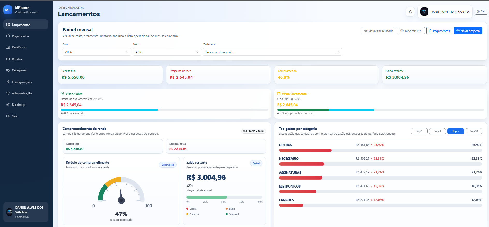
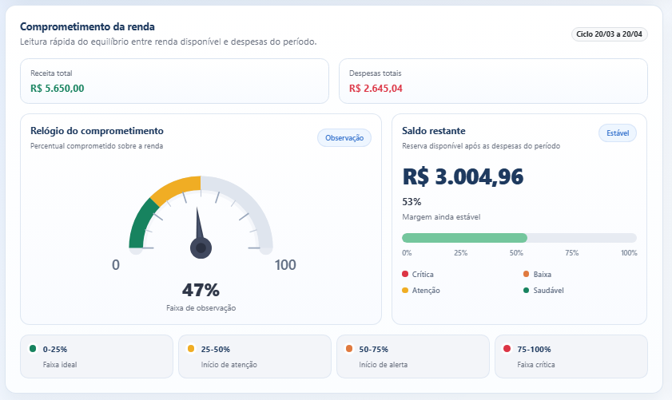
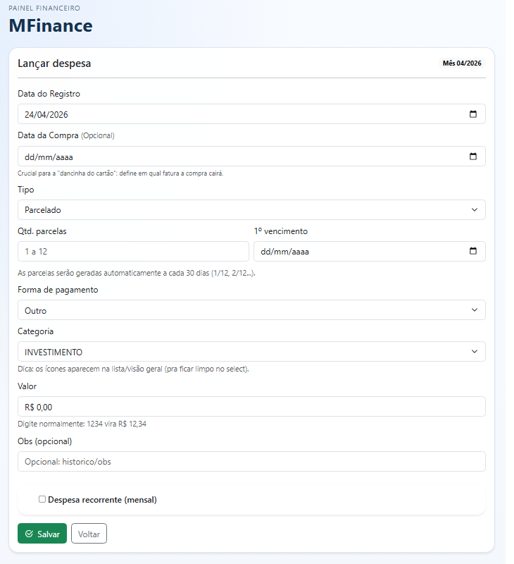
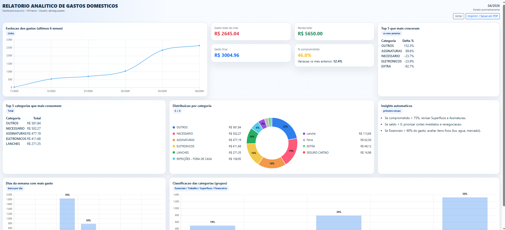
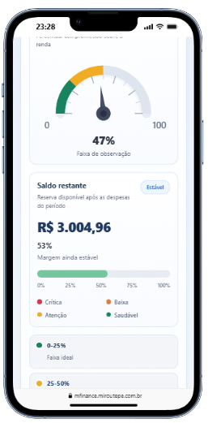

O que é
Aplicação web de controle financeiro criada para dar uma leitura rápida da saúde financeira, evitando aquela aventura arqueológica em planilhas que ninguém merece.
O MFinance organiza receitas, despesas, categorias e relatórios em uma experiência visual simples, segura e direta para famílias ou pequenos grupos.
Aplicação web de controle financeiro criada para dar uma leitura rápida da saúde financeira, evitando aquela aventura arqueológica em planilhas que ninguém merece.
Organização de lançamentos, categorização de gastos, visão por período, gráficos e acesso multiusuário com controle e segurança.
Resumo visual com indicadores, gráficos e leitura rápida dos gastos.
Ideal para famílias ou pequenos grupos acompanharem a vida financeira.
Cadastro e acompanhamento de receitas, despesas e recorrências.
Organização por tipo de gasto para entender para onde o dinheiro está indo.
Análises visuais para tomada de decisão e controle financeiro.
Controle de acesso e estrutura pensada para proteger os dados do usuário.
Algumas telas reais do sistema em funcionamento.

Visão geral da saúde financeira, gráficos e indicadores rápidos.

Controle de receitas e despesas organizadas.

Cadastro de movimentações financeiras.

Análises visuais para leitura dos gastos.

Experiência responsiva para acesso em telas menores.
Projeto desenvolvido com foco em clareza visual, organização de dados e possibilidade de evolução para novos módulos financeiros.